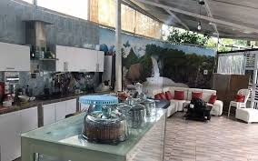
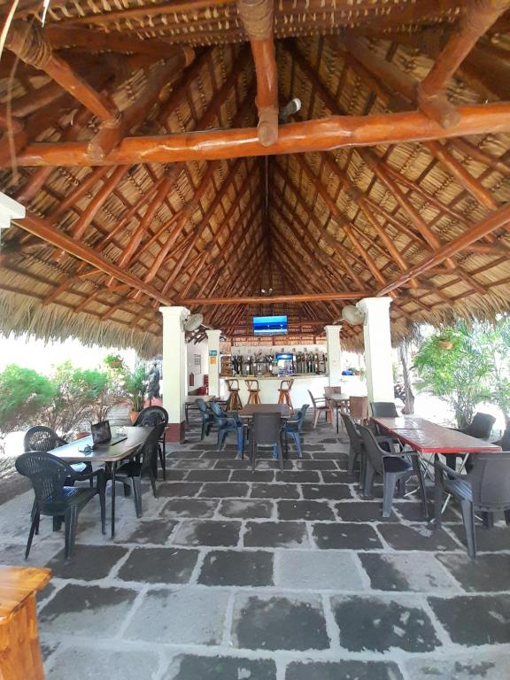
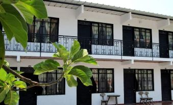
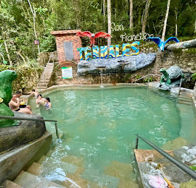

Un oasis de aguas termales, paz y bienestar en el corazón de Colombia
Explorar ahoraLos Termales son uno de los destinos más relajantes de Colombia por sus aguas termales naturales y su entorno sereno. Allí se encuentra un complejo de aguas termales que ofrecen propiedades curativas y relajantes, ideales para el bienestar y el descanso. Además de sus beneficios para la salud, el entorno natural de los Termales cautiva con paisajes verdes, ríos y montañas que invitan al ecoturismo y a la aventura ligera. Visitar los Termales es adentrarse en un viaje donde se entrelazan la tranquilidad del presente, la belleza de la naturaleza y la calidez de su gente, convirtiéndolo en un lugar imperdible para quienes buscan una experiencia de relajación y rejuvenecimiento única.

Dirección del Restaurante Termal 1, Termales Colombia
Dirección del Restaurante Termal 2, Termales Colombia este es un restaurante TOP

Dirección del Restaurante Termal 3, Termales Colombia

hotel campestre tifanny, Termales Colombia

Dirección del Hotel Termal 2, Termales Colombia
Dirección del Hotel Termal 3, Termales Colombia